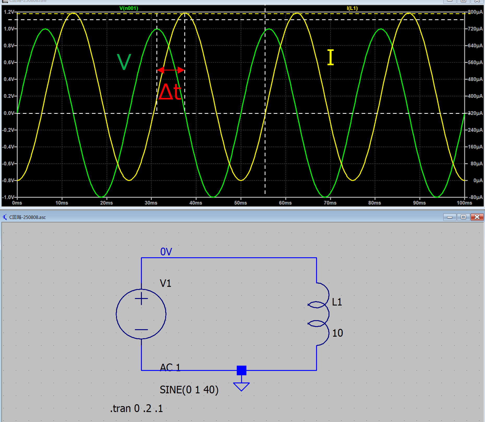

回路-05
インダクタ（コイル）
インダクタの細かい原理は置いていおいて，その性質は，
インダクタ，電流の時間的な変化量に比例して逆起電力が発生する
ものと考えます．式で表すと，電圧は，
\(\Large V(t) = L \displaystyle \frac{dI(t)}{dt} \)
ここで，
L : インダクタ （H)
となります．電流は，
\(\Large I(t) = \displaystyle \frac{1}{L} \ \int V(t) \ dt \)
となります．ちょうどコンデンサと逆の関係になります．
・交流電源
教科書には，電圧入力，と，電流入力，とありますが，今回はすべて，電圧入力，で考えます．交流電源（電圧）を加えた場合，
\(\Large V(t) = V_0 \ sin \ (\omega t )\)
となりますので，電流は，
\(\Large I(t) = \displaystyle \frac{1}{L} \ \int V(t) \ dt= -\frac{ V_0}{ \omega L} \ cos \ (\omega t ) + D \)
となります．
\(\Large sin (a-b) = sin \ a \cdot cos \ b - cos \ a \cdot sin \ b\)
\(\Large sin (a- \frac{ \pi}{2} ) = sin \ a \cdot cos \ \frac{ \pi}{2}- cos \ a \cdot sin \ \frac{ \pi}{2} = - cos \ a \)
から，
\(\Large I(t) = \displaystyle -\frac{ V_0}{ \omega L} \ cos \ (\omega t ) + D = \frac{ V_0}{ \omega L} \ sin \ \left(\omega t - \frac{ \pi}{2} \right) + D\)
となるので，
初期条件は，
t=0, I(0) = 0，ですので，
\(\Large I(０) = \displaystyle -\frac{ V_0}{ \omega L} \ sin \ (\omega \cdot 0 - \frac{ \pi}{2}) + D = -\frac{ V_0}{ \omega L} + D = 0 \)
\(\Large D = \frac{ V_0}{ \omega L} \)
\(\Large I(t) = \displaystyle \frac{ V_0}{ \omega L} \ sin \ \left(\omega t - \frac{ \pi}{2} \right) + \frac{ V_0}{ \omega L} = \frac{ V_0}{ \omega L} \left\{ 1 + sin \ \left(\omega t - \frac{ \pi}{2} \right) \right\}\)
となります．位相がπ/2だけシフトします．コンデンサのときとは逆のシフトとなります．さらに，電流はプラスマイナスではなく，０から，となります．
・LTspice
実際にL交流回路を作ってみてシミュレートしてみました．

条件は，
f = 40 Hz
L = 10 H
V0 = 1 V
ということで，
\(\Large \omega = 40 \cdot 2 \cdot \pi = 251.3 \ rad/s \)
振幅
インダクタ直下の電流値の振幅は，
\(\Large \frac{ V_0}{C \cdot \omega } = 398 \mu A \)
と電流の振幅が計算どおりとなっていることがわかります．
位相
今回は，この計算は使わずに，頂点同士の差（電流は０を横切らないので）から求めました．
\(\Large \Delta t = 5.90 \ ms \)
周波数は40 Hz，ですので，一周期が，1/40 = 25 ms.
\(\Large \phi= \frac{5.90}{25} \times 360 = 84 \ (degree) \)
と若干異なりますが，約90度（π/2），ズレていることがわかります．
次ページは，指数関数表示について考えていきます．